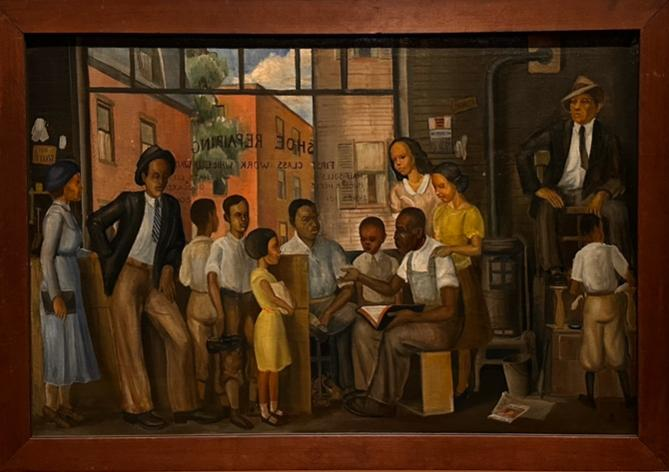

<!DOCTYPE html>
<html lang="en">
<head>
<meta charset="utf-8">
<meta name="viewport" content="width=device-width, initial-scale=1">
<title>lessons</title>
<link rel="icon" type="image/jpeg" href="pictures/favicon.jpg?v=3">
<link rel="shortcut icon" href="pictures/favicon.jpg?v=3">
<link rel="apple-touch-icon" href="pictures/favicon.jpg?v=3">

<link rel="stylesheet" href="css/site.css">
</head>
<body>

<main id="app"></main>

<script type="module">
import { PEOPLE } from './interviews/index.js';

/* ==================================================================
   ▓  YOUR DATA  ▓
   Copy a block to add a person. Everything else builds itself —
   the doodle rows and the next/prev links.
   qa[] is just question/answer pairs, in the order they were asked —
   free-form, since every conversation goes its own way.
   qa[].pull  = true  blows that answer up as a pull quote.
   ================================================================== */

const SITE = {
  title: "Interpolations",
  curator: "Ruth Sharon"
};

/* ==================================================================
   ▓  ENGINE  ▓
   ================================================================== */

const app  = document.getElementById('app');

const esc = s => String(s).replace(/[&<>"]/g,c=>({'&':'&amp;','<':'&lt;','>':'&gt;','"':'&quot;'}[c]));
const pad = n => String(n).padStart(2,'0');
const byslug = s => PEOPLE.find(p=>p.slug===s);
const SOON = 'Blooming soon';
const label = p => (p.soon && !p.named) ? SOON : p.name;

/* deterministic per-slug pseudo-random, so the scatter never jumps around */
function rng(seed){
  let h=2166136261;
  for(const ch of seed){ h^=ch.charCodeAt(0); h=Math.imul(h,16777619); }
  return ()=>{ h^=h<<13; h^=h>>>17; h^=h<<5; return ((h>>>0)%100000)/100000; };
}


/* ---------- INDEX ---------- */
/* ---- the image plate: a doodle, drawn badly, by a different hand ----
   Twenty-two motifs, one per person. Each is defined as clean geometry
   and then re-drawn with a wobble: the line is resampled, every sample
   nudged, closed shapes overshoot where they meet. The "hand" — stroke
   weight, how shaky, one pass or two, tilt, ink — is seeded off the slug,
   so no two people draw alike and nobody's drawing ever changes. */

/* ---------- INDEX: the bunch ----------
   No wrap, no bow. Flowers packed close enough to leave no gaps, small
   leaves filling what's left, and long stems gathering to a point below.
   Nothing is blurred — every edge is a clean line. */

const CLUSTER = {cx:50, cy:36, rx:34, ry:27};
const GATHER  = [50, 108];

/* Each flower is a radial wash, the way a real petal is: a throat that
   contrasts, the body of the colour, and a rim that lifts at the edge.
   throat · inner · petal · rim · vein  */
const PALETTE = [
  ['#7E1C4B','#F2E7EA','#FDFCFA','#FFFFFF','#D9C9CE'],  // white, magenta throat
  ['#C9A227','#FFF6D9','#FFFDF4','#FFFFFF','#E4D9B8'],  // ivory, gold throat
  ['#B8860B','#FFE9A3','#FFD34E','#FFE884','#C99A12'],  // yellow
  ['#B03A0A','#FFC24A','#F79226','#FFBE5C','#B4600E'],  // marigold
  ['#A62310','#FF9E5E','#F4652A','#FF9C63','#AF4818'],  // orange
  ['#5E0C06','#F2836E','#DE2A1C','#F4695A','#6E1008'],  // scarlet
  ['#380408','#D8564E','#B01420','#C93038','#3E060A'],  // deep red
  ['#2A0410','#A83E52','#7E1028','#9E2038','#2E040F'],  // burgundy
  ['#8E1C55','#FFC9DA','#F58CB0','#FFC2D6','#C4527E'],  // blush
  ['#8A0F45','#F26FA6','#DE3D80','#F074A8','#9C1B55'],  // rose
  ['#5E0A45','#E05FC0','#BE1E93','#DC55B4','#6E1256'],  // magenta
  ['#26063A','#B872D0','#7E2E9E','#A459BE','#2E0846'],  // plum
  ['#2A1A6E','#8E86E0','#5A4EC4','#8880DC','#33227E'],  // violet
  ['#1A2A7E','#7FA0EE','#3E62CE','#7A9CEA','#22357E'],  // cornflower
  ['#123A6E','#6EC0F2','#1E86D4','#6ABCEE','#155A94'],  // azure
  ['#050C28','#5E78C4','#22357E','#4A66B4','#080F30'],  // navy
  ['#7E9E2A','#F2F7DC','#DCEAB4','#EAF2CE','#A8BE7E'],  // pale green
  ['#4A6E1A','#B4D48A','#8ABE5C','#B0D086','#5E7E2E']   // sage
];

/* Phyllotaxis: the arrangement a real flower head uses. Every point sits
   the same distance from its neighbours, which is exactly what "no gaps"
   requires — a random scatter always leaves holes. */
function bouquetLayout(n){
  const GOLDEN = Math.PI * (3 - Math.sqrt(5));
  return [...Array(n)].map((_,i)=>{
    const r = rng('pack'+i);
    const t = Math.sqrt((i + 0.5) / n);
    const a = i * GOLDEN;
    return {
      x: CLUSTER.cx + Math.cos(a)*CLUSTER.rx*t + (r()-0.5)*1.6,
      y: CLUSTER.cy + Math.sin(a)*CLUSTER.ry*t + (r()-0.5)*1.6,
      s: (1.08 - t*0.16) * (0.96 + r()*0.08),      // middle heads a little larger
      t, a
    };
  }).sort((p,q)=> q.t - p.t);                       // rim first, centre last
}

/* small leaves tucked into the spaces between heads */
function leafFill(n){
  const GOLDEN = Math.PI * (3 - Math.sqrt(5));
  const bits = [...Array(n)].map((_,i)=>{
    const r = rng('leaf'+i);
    const t = Math.sqrt((i + 0.5) / n) * 1.06;
    const a = i * GOLDEN + 0.8;
    const x = CLUSTER.cx + Math.cos(a)*CLUSTER.rx*t;
    const y = CLUSTER.cy + Math.sin(a)*CLUSTER.ry*t;
    const L = 7 + r()*5, w = 2.6 + r()*1.4;
    const g = ['#8FBB6E','#6F9E57','#A6C98A'][Math.floor(r()*3)];
    return `<g transform="translate(${x.toFixed(1)} ${y.toFixed(1)}) rotate(${(r()*360).toFixed(0)})">
      <path d="M0 0 C${w} ${-L*.3} ${w*.8} ${-L*.72} 0 ${-L.toFixed(1)}
               C${-w*.8} ${-L*.72} ${-w} ${-L*.3} 0 0 Z" fill="${g}" class="leafshape"/>
      <path d="M0 -1 L0 ${(-L+1.5).toFixed(1)}" class="leafvein"/></g>`;
  }).join('');
  return `<svg class="leaves" viewBox="0 0 100 100" preserveAspectRatio="none">${bits}</svg>`;
}

/* long stems, gathered */
function stemArt(spots){
  /* A square bouquet can't fill a tall phone, so the box stops short of the
     bottom. Run the stems further past it there and the screen edge still
     does the cutting. */
  const gx = GATHER[0];
  const gy = ((typeof window !== 'undefined' && window.innerWidth) || 1440) < 820 ? 132 : GATHER[1];
  const lower = spots.filter(sp=>sp.y > CLUSTER.cy - 2);
  const stems = lower.map((sp,i)=>{
    const r = rng('stem'+i);
    const bend = (sp.x - gx) * 0.45;
    return `<path d="M${sp.x.toFixed(1)} ${sp.y.toFixed(1)}
             C${(sp.x - bend*0.25).toFixed(1)} ${(sp.y+14).toFixed(1)}
              ${(gx + bend*0.30).toFixed(1)} ${(gy-22).toFixed(1)}
              ${gx} ${gy}" class="stem" style="--w:${(0.8+r()*0.7).toFixed(2)}"/>`;
  }).join('');

  const sprigs = lower.filter((_,i)=>i%3===1).map((sp,i)=>{
    const r = rng('sl'+i);
    const my = sp.y + 16 + r()*20;
    const mx = sp.x + (gx - sp.x)*((my - sp.y)/(gy - sp.y)) * 0.9;
    const dir = mx < gx ? -1 : 1;
    const L = 5 + r()*4;
    return `<g transform="translate(${mx.toFixed(1)} ${my.toFixed(1)}) rotate(${(dir*58 + (r()-0.5)*24).toFixed(0)})">
      <path d="M0 0 C${2.4*dir} ${-L*.3} ${2*dir} ${-L*.7} 0 ${-L.toFixed(1)}
               C${-2*dir} ${-L*.7} ${-2.4*dir} ${-L*.3} 0 0 Z" fill="#7FAD64" class="leafshape"/></g>`;
  }).join('');

  return `<svg class="stems" viewBox="0 0 100 100" preserveAspectRatio="none">${stems}${sprigs}</svg>`;
}


/* ---- the blooms ----
   Six shapes that stay legible at the size they're actually drawn. Flat
   colour, black line, nothing clever. */

/* ---- the blooms ----
   Built from the reference: broad ruffled petals, a throat that contrasts,
   veins running out from the middle, and a stamen column standing proud of
   the face. Every petal is filled with the flower's own radial wash, so the
   colour deepens into the centre the way it does on a real one. */

/* one petal, pointing up from the middle, ruffled along its outer edge */
const P = {
  /* hibiscus: a broad fan, widest near the tip, ruffled across the top —
     five of these at 72° just meet, which is what makes them read as five
     petals instead of one lump */
  broad: `M50 50 C42 43 31 33 28 22
          C25 13 32 6 39 9 C43 10 44 5 50 5
          C56 5 57 10 61 9 C68 6 75 13 72 22
          C69 33 58 43 50 50 Z`,
  /* lily: narrow, pointed, curling back */
  spear: `M50 50 C40 41 34 24 44 6 C46 2 54 2 56 6
          C66 24 60 41 50 50 Z`,
  /* gerbera: a slim tongue with a rounded tip */
  ray:   `M50 50 C45 43 43 27 45 14 C46 8 54 8 55 14
          C57 27 55 43 50 50 Z`,
  /* dahlia: pointed, folded down the middle */
  quill: `M50 50 C44 41 41 25 50 8 C59 25 56 41 50 50 Z`,
  /* rounded and overlapping — camellia, ranunculus, pompom */
  round: `M50 50 C37 47 29 38 31 27 C33 17 41 11 50 14
          C59 11 67 17 69 27 C71 38 63 47 50 50 Z`
};

const ring = (n, d, off=0, scale=1) => [...Array(n)].map((_,i)=>
  `<path d="${d}" class="fl" transform="rotate(${(i*(360/n)+off).toFixed(1)} 50 50)${
    scale!==1 ? ` translate(50 50) scale(${scale}) translate(-50 -50)` : ''}"/>`).join('');

const veins = (n, len, off=0) => [...Array(n)].map((_,i)=>
  `<path d="M50 46 C50 ${(50-len*0.45).toFixed(0)} 50 ${(50-len*0.7).toFixed(0)} 50 ${(50-len).toFixed(0)}"
     class="vein" transform="rotate(${(i*(360/n)+off).toFixed(1)} 50 50)"/>`).join('');

/* the column of stamens a hibiscus carries out in front of its face.
   Small and thin it just disappears at the size these are drawn, so it is
   deliberately bold. */
const column = (len=32) => `
  <g transform="rotate(-20 50 50)">
    <path d="M50 48 C50 ${(50-len*0.4).toFixed(0)} 49 ${(50-len*0.75).toFixed(0)} 47.5 ${(50-len).toFixed(0)}" class="fil"/>
    ${[...Array(8)].map((_,i)=>{
      const t = 0.44 + i*0.075, a = (i%2 ? 1 : -1) * (3 + i*0.5);
      const y = 50 - len*t, x = 50 + a;
      return `<path d="M${(50-(50-x)*0.3).toFixed(1)} ${(50-(50-y)*0.7).toFixed(1)}
                       L${x.toFixed(1)} ${y.toFixed(1)}" class="fil"/>
              <circle cx="${x.toFixed(1)}" cy="${y.toFixed(1)}" r="2.1" class="anth"/>`;
    }).join('')}
    ${[...Array(5)].map((_,i)=>{
      const a = (i-2)*0.42, x = 47.5 + Math.sin(a)*4.6, y = 50-len + Math.cos(a)*1.4 - 2.4;
      return `<circle cx="${x.toFixed(1)}" cy="${y.toFixed(1)}" r="2.6" class="stig"/>`;
    }).join('')}
  </g>`;

const BLOOMS = {
  /* the shape that runs right through her reference */
  poppy: ()=>`
    ${ring(5, P.broad, 18)}
    ${veins(5, 36, 18)}
    ${[...Array(5)].map((_,i)=>
      `<path d="M50 47 C45 39 42 30 43 21 M50 47 C55 39 58 30 57 21"
        class="vein" transform="rotate(${i*72+18} 50 50)" opacity=".34"/>`).join('')}
    ${column(33)}`,

  /* a second hibiscus, petals turned the other way and a shorter column */
  cosmos: ()=>`
    ${ring(5, P.broad, -16, 0.96)}
    ${veins(5, 33, -16)}
    ${column(28)}`,

  /* gerbera: two rings of rays around a packed disc */
  daisy: ()=>`
    ${ring(16, P.ray, 0)}
    ${ring(16, P.ray, 11.25, 0.76)}
    <circle cx="50" cy="50" r="13" class="mid"/>
    ${[...Array(26)].map((_,i)=>{
      const t = Math.sqrt((i+0.5)/26), a = i*2.399963;
      return `<circle cx="${(50+Math.cos(a)*11.5*t).toFixed(1)}"
                      cy="${(50+Math.sin(a)*11.5*t).toFixed(1)}"
                      r="1.6" class="anth" opacity=".85"/>`;}).join('')}`,

  /* lily: six pointed petals, freckled throat, stamens out front */
  tulip: ()=>`
    ${ring(3, P.spear, 60, 0.97)}
    ${ring(3, P.spear, 0)}
    ${veins(6, 36)}
    ${[...Array(16)].map((_,i)=>{
      const r0 = rngv(i), a = i*2.399963, t = Math.sqrt((i+0.5)/16);
      return `<circle cx="${(50+Math.cos(a)*14*t).toFixed(1)}"
                      cy="${(50+Math.sin(a)*14*t).toFixed(1)}"
                      r="${(1+r0*0.6).toFixed(1)}" class="stig" opacity=".6"/>`;}).join('')}
    ${column(28)}`,

  /* camellia: rounded petals folding in, each ring turned off the last */
  rose: ()=>`
    ${ring(7, P.round, 0)}
    ${ring(6, P.round, 26, 0.68)}
    ${ring(5, P.round, 12, 0.4)}
    <circle cx="50" cy="50" r="3.4" class="mid"/>`,

  /* dahlia: three rings of quills, tight eye */
  aster: ()=>`
    ${ring(13, P.quill, 0)}
    ${ring(13, P.quill, 13.8, 0.74)}
    ${ring(9, P.quill, 6, 0.46)}
    <circle cx="50" cy="50" r="4.6" class="mid"/>`,

  /* ranunculus: small rounded petals wound tight */
  ranunculus: ()=>`
    ${ring(8, P.round, 0)}
    ${ring(8, P.round, 22, 0.7)}
    ${ring(6, P.round, 11, 0.44)}
    <circle cx="50" cy="50" r="3" class="mid"/>`,

  /* pompom dahlia: a dense ball of little petals */
  pom: ()=>`
    ${ring(11, P.round, 0, 0.94)}
    ${ring(11, P.round, 16, 0.66)}
    ${ring(8,  P.round, 8,  0.42)}
    <circle cx="50" cy="50" r="2.6" class="mid"/>`,

  /* Still closed, and smaller than an open flower, because that is what a
     bud is. Levelling it to the same size as the blooms turned the page
     into a heap of green eggs with six flowers lost in it. */
  bud: ()=>`
    <path d="M50 12 C63 24 69 44 65 61 C61 76 56 86 50 88
             C44 86 39 76 35 61 C31 44 37 24 50 12 Z" class="fl"/>
    <path d="M50 12 C60 32 61 60 53 87" class="ln" opacity=".5"/>
    <path d="M50 12 C40 32 39 60 47 87" class="ln" opacity=".5"/>
    <path d="M37 40 C45 48 48 62 48 88" class="ln" opacity=".3"/>
    <path d="M63 40 C55 48 52 62 52 88" class="ln" opacity=".3"/>`
};

/* a scrap of noise for the lily freckles, so they don't sit in a lattice */
function rngv(i){ const x = Math.sin(i*127.1)*43758.5453; return x - Math.floor(x); }

const BLOOM_KEYS = ['daisy','cosmos','poppy','tulip','rose',
                    'daisy','cosmos','poppy','rose','bud'];

/* Shape and colour are chosen against the neighbours rather than at
   random, so no two touching flowers are the same. Each person keeps a
   seeded order of preference and takes the first one nobody beside them
   has already used; if every option is taken, whichever is rarest wins. */
const SHAPES = ['daisy','cosmos','poppy','tulip','rose','bud','aster','ranunculus','pom'];

/* how much of its 100-unit box each shape actually fills, inverted — so
   every flower ends up the same size on the page and none leaves a hole */
/* measured from each shape's own markup, not guessed */
const SHAPE_FIT = {
  poppy:1.01, cosmos:1.06, daisy:1.14, tulip:1.00, rose:1.20,
  aster:1.15, ranunculus:1.20, pom:1.28, bud:0.80
};

function assignBlooms(spots, people){
  const shape = [], colour = [];
  /* A colour asked for by name is held back — but only from flowers near
     enough to be confused with it. Reserving all six across the whole bunch
     left too few colours for everyone else, and neighbours started
     repeating. */
  const claims = (people||[]).map((p,i)=>
    (p && p.colour !== undefined) ? {i, c:p.colour} : null).filter(Boolean);
  const freeFor = i => {
    const near = new Set(claims
      .filter(cl => cl.i !== i && Math.hypot(spots[cl.i].x-spots[i].x, spots[cl.i].y-spots[i].y) < 34)
      .map(cl => cl.c));
    return [...PALETTE.keys()].filter(k => !near.has(k));
  };
  const shuffled = (arr, r)=>{
    const a = arr.slice();
    for(let k=a.length-1;k>0;k--){ const j=Math.floor(r()*(k+1)); [a[k],a[j]]=[a[j],a[k]]; }
    return a;
  };
  const pick = (pref, near, taken)=>{
    const free = pref.find(v=>!near.includes(v));
    if(free !== undefined) return free;
    const count = v => near.filter(x=>x===v).length;      // fall back to rarest
    return pref.slice().sort((a,b)=>count(a)-count(b))[0];
  };
  spots.forEach((sp,i)=>{
    const r = rng('assign'+i);
    const nb = [];
    for(let j=0;j<i;j++)
      if(Math.hypot(spots[j].x-sp.x, spots[j].y-sp.y) < 24) nb.push(j);
    const want = people[i] || {};
    /* no name yet, no bloom yet */
    shape[i]  = (want.soon && !want.named) ? 'bud'
              : want.shape !== undefined   ? want.shape
              : pick(shuffled(SHAPES, r),              nb.map(j=>shape[j]));
    colour[i] = want.colour !== undefined ? want.colour
              : pick(shuffled(freeFor(i), r),          nb.map(j=>colour[j]));
  });
  return {shape, colour};
}

const BUD = '#C9D8B2';           // every unopened one, the same soft green

function flower(p, kind, c, r){
  const spin = Math.round(rng(p.slug+'::spin')()*360);
  /* buds all share a colour on purpose — twenty-four different greens would
     compete with the six flowers that are meant to be the subject */
  const B = ['#AFC894','#BCD2A2','#A8C48A','#C6DAAE','#6F8E56'];
  const [throat, inner, petal, rim, vein] = kind === 'bud' ? B : PALETTE[c];

  /* Its own gradient, because the whole point is that the colour is not
     flat: it sits deep in the throat and opens out towards the rim. The
     id has to be unique or every flower on the page borrows the first
     one's colours. */
  const id = 'w-' + p.slug;
  return `<svg viewBox="0 0 100 100" class="bloom"
       style="--throat:${throat};--inner:${inner};--petal:${petal};
              --rim:${rim};--vein:${vein};--spin:${spin}deg">
    <defs>
      <!-- userSpaceOnUse, not the default. On the default every petal gets
           its own little gradient centred on itself, which is exactly wrong:
           a flower has ONE throat and the colour opens out from it. -->
      <radialGradient id="${id}" gradientUnits="userSpaceOnUse"
                      cx="50" cy="50" r="46">
        <stop offset="0%"   stop-color="${throat}"/>
        <stop offset="17%"  stop-color="${throat}"/>
        <stop offset="30%"  stop-color="${inner}"/>
        <stop offset="52%"  stop-color="${petal}"/>
        <stop offset="88%"  stop-color="${petal}"/>
        <stop offset="100%" stop-color="${rim}"/>
      </radialGradient>
    </defs>
    <g fill="url(#${id})">${BLOOMS[kind]()}</g>
  </svg>`;
}


function viewIndex(){
  app.innerHTML = `
  <div class="hand-page">
    <div class="sheet">
      <h1 class="masthead">Trying to learn<br>from people</h1>

      <div class="searchrow">
        <input id="q" type="search" autocomplete="off" spellcheck="false"
               placeholder="search for someone">
        <button class="aboutlink" type="button" id="aboutbtn">about this site</button>
      </div>

      <nav class="name-index" aria-label="people">
                <a class="name-oval" href="#/p/anita-wong">anita wong</a>
        <a class="name-oval" href="#/p/ashley">ashley</a>
        <span class="name-oval soon" aria-disabled="true">george st. camera</span>
        <span class="name-oval soon" aria-disabled="true">larry</span>
        <span class="name-oval soon" aria-disabled="true">louis mendez</span>
        <a class="name-oval" href="#/p/samir-dorothy">samir &amp; dorothy</a>
        <a class="name-oval" href="#/p/siddharth">siddharth</a>
        <span class="name-oval soon" aria-disabled="true">tejas</span>
      </nav>
    </div>
  </div>

  <div class="overlay" id="about" hidden>
    <div class="scrim"></div>
    <div class="card-about" role="dialog" aria-modal="true" aria-label="About this site">
      <button class="close" type="button" aria-label="Close">&times;</button>
      <p>This is my attempt at learning from as many people as I can meet. I
         interview people I find interesting and turn it into an essay.
         Documenting these conversations is very important to me because
         a)&nbsp;I don&rsquo;t want to lose any of this info to my poor memory
         and b)&nbsp;it challenges me to keep at something I love doing.</p>
      <p>Everything will remain unnamed and untitled for now till I find the
         perfect word(s).</p>
    </div>
  </div>`;

  const sheet = document.getElementById('about');
  const shut  = ()=>{ sheet.classList.remove('on'); setTimeout(()=>{sheet.hidden = true;}, 200); };
  document.getElementById('aboutbtn').onclick = ()=>{
    sheet.hidden = false;
    requestAnimationFrame(()=> sheet.classList.add('on'));
    sheet.querySelector('.close').focus();
  };
  sheet.querySelector('.scrim').onclick = shut;
  sheet.querySelector('.close').onclick = shut;

  const q = document.getElementById('q');
  const ovals = [...document.querySelectorAll('.name-index .name-oval')];

  const filterNames = ()=>{
    const v = q.value.trim().toLowerCase();
    ovals.forEach(el=>{
      const match = !v || el.textContent.trim().toLowerCase().includes(v);
      el.hidden = !match;
    });
  };

  q.addEventListener('input', filterNames);
  q.addEventListener('search', filterNames);

  q.onkeydown = e=>{
    if(e.key !== 'Enter') return;
    const firstPublished = ovals.find(el =>
      !el.hidden && el.matches('a.name-oval[href]')
    );
    if(firstPublished) location.hash = firstPublished.getAttribute('href');
  };
}

const pager = null;

/* ---------- WRITING IT IN THE PAGE ----------
   Press `write` on any page and it becomes editable in place. Everything
   you change is kept in this browser straight away, so a reload doesn't
   lose it. `copy the code` hands you the block to paste into the file when
   you want it to be permanent for everyone, not just this browser. */

let EDIT = false;
let BLOCKS = [];
let CURRENT = null;
let SEL = -1;          // the block the buttons act on

const FONTS = {body:'--body', narrow:'--ui', serif:'--note', hand:'--hand'};
const FONT_ORDER = ['body','narrow','serif','hand'];
const RATIOS = ['auto','4/5','1/1','3/2','16/9','3/4'];

/* ---- keeping it ----------------------------------------------------
   Two layers, because the first one is not always there.

   1. the browser's own memory. Instant, but a browser opening a file
      straight off the disk will often refuse it, and a preview pane
      inside another app throws it away the moment it closes. So it is
      TESTED, not assumed, and if it isn't working the page says so out
      loud instead of pretending.

   2. `save this page`. Writes out a whole fresh copy of this file with
      your edits already inside the writing itself. Nothing to paste,
      nothing to trust. That one always works.
   -------------------------------------------------------------------- */

/* a real test: write something, read it back, take it away again */
const CAN_KEEP = (()=>{
  try{
    localStorage.setItem('bouquet:probe','1');
    const ok = localStorage.getItem('bouquet:probe') === '1';
    localStorage.removeItem('bouquet:probe');
    return ok;
  }catch(e){ return false; }
})();

const kept = p => { try{ return localStorage.getItem('bouquet:'+p.slug); }catch(e){ return null; } };

const keyFor = p => 'bouquet:' + p.slug;
function save(){
  if(!CURRENT) return;
  let ok = false;
  try{
    localStorage.setItem(keyFor(CURRENT), JSON.stringify(BLOCKS));
    ok = localStorage.getItem(keyFor(CURRENT)) !== null;
  }catch(e){ ok = false; }
  const dot = app.querySelector('.saved');
  if(dot){
    dot.textContent = ok ? 'kept' : 'not kept — use save this page';
    dot.classList.toggle('bad', !ok);
    clearTimeout(save._t);
    if(ok) save._t = setTimeout(()=>{ if(dot) dot.textContent = ''; }, 1400);
  }
}
function load(p){
  try{
    const raw = localStorage.getItem(keyFor(p));
    if(raw){
      const saved = JSON.parse(raw);
      /* Preserve local edits, but migrate the one Siddharth link added
         after those edits may have been saved in this browser. */
      if(p.slug === 'anita-wong'){
        const FINAL_ANITA_MARKER = 'Passion is contagious and will infect you too if you simply allow it to.';
        if(!JSON.stringify(saved).includes(FINAL_ANITA_MARKER)){
          try{ localStorage.removeItem(keyFor(p)); }catch(e){}
          return JSON.parse(JSON.stringify(p.story || []));
        }
      }
      if(p.slug === 'siddharth'){
        const oldReach = 'you can reach out to him yourself!';
        const linkedReach = 'you can <a href="https://x.com/itsiddharth_" target="_blank" rel="noopener noreferrer">reach</a> out to him yourself!';
        let changed = false;
        saved.forEach(b => {
          if(typeof b.p === 'string' && b.p.includes(oldReach)){
            b.p = b.p.replace(oldReach, linkedReach);
            changed = true;
          }
        });
        if(changed){
          try{ localStorage.setItem(keyFor(p), JSON.stringify(saved)); }catch(e){}
        }
      }
      return saved;
    }
  }catch(e){}
  return JSON.parse(JSON.stringify(p.story || []));
}

/* ---- save this page -------------------------------------------------
   SOURCE is this file exactly as it was before anything was drawn — see
   the bottom of the script. To save, we find this person's story in that
   text, swap in what you've written, and hand the whole file back. */
/* Save the current interview as its own module. The site used to rewrite the
   whole HTML file, but interviews now live independently. Keeping the
   export self-contained means Cmd-E still works after the refactor. */
function interviewModuleCode(){
  const record = JSON.parse(JSON.stringify(CURRENT || {}));
  record.story = JSON.parse(JSON.stringify(BLOCKS || []));
  return 'export default ' + JSON.stringify(record, null, 2) + ';\n';
}

function saveCopy(){
  harvest();
  if(!CURRENT) return false;
  try{
    const out = interviewModuleCode();
    const url = URL.createObjectURL(new Blob([out], {type:'text/javascript'}));
    const a = document.createElement('a');
    a.href = url;
    a.download = CURRENT.slug + '.js';
    document.body.appendChild(a); a.click(); a.remove();
    setTimeout(()=>URL.revokeObjectURL(url), 4000);
    const dot = app.querySelector('.saved');
    if(dot){ dot.classList.remove('bad');
             dot.textContent = 'saved — replace interviews/' + CURRENT.slug + '.js';
             clearTimeout(save._t);
             save._t = setTimeout(()=>{ if(dot) dot.textContent=''; }, 6000); }
    return true;
  }catch(e){ showCode(); return false; }
}

/* NB: <a> is deliberately left alone in here — anything not named survives,
   and links must. */
const tidy = html => html
  .replace(/<b>/g,'<strong>').replace(/<\/b>/g,'</strong>')
  .replace(/<i>/g,'<em>').replace(/<\/i>/g,'</em>')
  .replace(/<div>/g,'<br>').replace(/<\/div>/g,'')
  .replace(/<font[^>]*>|<\/font>/g,'')
  .replace(/&nbsp;/g,' ').replace(/\s+/g,' ').trim();

const numOf = v => Math.round(parseFloat(v)*10)/10;

/* The photographs strewn through the columns belong to the person's record,
   not to the writing, so everything that counts blocks has to step over
   them — otherwise reading the page back turns a photograph into a
   paragraph of markup and the save is corrupted. */
const partsOf = host => [...host.children].filter(el =>
  !el.classList.contains('ghostline') &&
  !el.classList.contains('dropline') &&
  !el.classList.contains('plate') &&
  !el.classList.contains('plate-pair'));   /* a pair is a plate too */

/* The writing can be split across two boxes — the opening paragraphs beside
   the headline, the rest in the columns. Everything that counts or indexes
   blocks works off this, so the split is invisible to the editor. */
const allParts = () => [...app.querySelectorAll('.story')].flatMap(partsOf);

/* read the page back into the blocks */
function harvest(){
  if(!app.querySelector('.story')) return;
  BLOCKS = allParts().map(el=>{
    if(el.classList.contains('panel') && el.dataset.list){
      try{ return {list: JSON.parse(el.dataset.list)}; }catch(e){}
    }
    if(el.classList.contains('fig')){
      const b = {img: el.dataset.src};
      if(el.dataset.alt) b.alt = el.dataset.alt;
      const note = el.querySelector('.note');
      if(note){
        const c = note.cloneNode(true);
        c.querySelectorAll('svg,.grip').forEach(n=>n.remove());
        b.note = tidy(c.innerHTML);
      }
      b.side  = (/side-(\w+)/.exec(el.className)||[,'right'])[1];
      const w = el.style.getPropertyValue('--figw'); if(w) b.width = w;
      b.ratio = el.dataset.ratio || 'auto';
      b.fx = numOf(el.dataset.fx || 50);  b.fy = numOf(el.dataset.fy || 50);
      b.zoom = numOf(el.dataset.zoom || 1);
      b.nx = numOf(el.style.getPropertyValue('--nx') || -30);
      b.ny = numOf(el.style.getPropertyValue('--ny') || 52);
      b.nrot = numOf(el.style.getPropertyValue('--nrot') || -4);
      b.tx = numOf(el.dataset.tx || 18); b.ty = numOf(el.dataset.ty || 48);
      if(!el.querySelector('.arrowlayer')) b.arrow = false;
      return b;
    }
    if(el.classList.contains('cap')){
      return {box: tidy(el.querySelector('.captext').innerHTML),
              x: numOf(el.style.left), y: numOf(el.style.top),
              w: numOf(el.style.width), rot: numOf(el.style.getPropertyValue('--rot')||0),
              font: el.dataset.font || 'hand', size: numOf(el.style.fontSize || 19),
              tone: el.dataset.tone || 'red'};
    }
    const b = {p: tidy(el.innerHTML)};
    if(el.classList.contains('pull')) b.class = 'pull';
    if(el.dataset.font && el.dataset.font!=='body') b.font = el.dataset.font;
    if(el.style.fontSize) b.size = numOf(el.style.fontSize);
    if(el.style.maxWidth) b.w = numOf(el.style.maxWidth);
    return b;
  });
  save();
}

function storyCode(){
  const q = s => String(s).replace(/`/g,'\\`');
  const esc1 = s => String(s||'').replace(/'/g,"\\'");
  return 'story:[\n' + BLOCKS.map(b=>{
    if(b.img !== undefined) return `      { img:'${b.img}',${b.alt?` alt:'${esc1(b.alt)}',`:''}\n` +
      `        note:'${esc1(b.note)}', side:'${b.side||'right'}'${b.width?`, width:'${b.width}'`:''},\n` +
      `        ratio:'${b.ratio||'auto'}', fx:${b.fx??50}, fy:${b.fy??50}, zoom:${b.zoom??1},\n` +
      `        nx:${b.nx??-30}, ny:${b.ny??52}, nrot:${b.nrot??-4},\n` +
      `        tx:${b.tx??18}, ty:${b.ty??48}${b.arrow===false?', arrow:false':''} },`;
    if(b.box !== undefined) return `      { box:\`${q(b.box)}\`, x:${b.x}, y:${b.y}, w:${b.w},\n` +
      `        rot:${b.rot||0}, font:'${b.font||'hand'}', size:${b.size||19}, tone:'${b.tone||'red'}' },`;
    if(b.list) return '      { list:{ title:`' + q(b.list.title||'') + '`, items:[\n' +
      (b.list.items||[]).map(t => '        `' + q(t) + '`').join(',\n') +
      '\n      ]}},';
    return '      { ' + (b.class?`class:'${b.class}', `:'') + 'p:`' + q(b.p) + '`' +
      (b.font?`, font:'${b.font}'`:'') + (b.size?`, size:${b.size}`:'') +
      (b.w?`, w:${b.w}`:'') + ' },';
  }).join('\n\n') + '\n    ]';
}

function showCode(){
  const code = storyCode();
  try{ navigator.clipboard && navigator.clipboard.writeText(code); }catch(e){}
  const box = app.querySelector('#codebox');
  if(box){ box.value = code; box.hidden = false; box.select(); }
}

function toolbar(){
  return `<div class="tools">
    <button data-a="bold"><b>B</b></button>
    <button data-a="italic"><i>I</i></button>
    <button data-a="link">link</button>
    <button data-a="unlink">unlink</button>
    <button data-a="red" class="t-red">red</button>
    <button data-a="green" class="t-green">green</button>
    <button data-a="plain">plain</button>
    <i class="sep"></i>
    <button data-a="font">font</button>
    <button data-a="smaller">A−</button>
    <button data-a="bigger">A+</button>
    <button data-a="colnarrow">column −</button>
    <button data-a="colwide">column +</button>
    <i class="sep"></i>
    <button data-a="addp">+ paragraph</button>
    <button data-a="addimg">+ picture</button>
    <button data-a="addcap">+ caption</button>
    <button data-a="del">delete</button>
    <i class="sep"></i>
    <button data-a="up">↑</button>
    <button data-a="down">↓</button>
    <button data-a="side">left / right / full</button>
    <button data-a="narrow">−</button>
    <button data-a="wider">+</button>
    <i class="sep"></i>
    <button data-a="ratio">crop shape</button>
    <button data-a="zoomout">zoom −</button>
    <button data-a="zoomin">zoom +</button>
    <button data-a="tiltl">tilt ↺</button>
    <button data-a="tiltr">tilt ↻</button>
    <button data-a="arrow">arrow</button>
    <i class="sep"></i>
    <button data-a="savepage" class="t-go">save interview file</button>
    <button data-a="copy">copy the code</button>
    <button data-a="revert">revert</button>
    <button data-a="done">done</button>
    <span class="saved"></span>
  </div>
  ${CAN_KEEP ? '' : `<p class="warn">This browser will not hold on to your
    writing between visits — nothing typed here is being kept on its own.
    Press <b>save interview file</b> before you close it and you get a fresh
    copy of this person’s module with your writing already inside it. Replace
    the matching file in <code>interviews/</code> and everything stays modular.</p>`}`;
}

function wrapSel(cls){
  const sel = window.getSelection();
  if(!sel.rangeCount || sel.isCollapsed) return;
  const r = sel.getRangeAt(0);
  if(cls){
    const span = document.createElement('span');
    span.className = cls; span.appendChild(r.extractContents()); r.insertNode(span);
  } else {
    const f = r.extractContents();
    f.querySelectorAll('span').forEach(sp=>sp.replaceWith(...sp.childNodes));
    r.insertNode(f);
  }
  sel.removeAllRanges();
}

/* Turning selected words into a link, and back again.
   The selection has to be grabbed BEFORE the prompt opens — a prompt takes
   the focus, and on some browsers that collapses the selection, so asking
   first and reading the selection afterwards gets you nothing. */
function linkSel(){
  const sel = window.getSelection();
  if(!sel.rangeCount || sel.isCollapsed){
    alert('Select the words you want to link first.');
    return false;
  }
  const r = sel.getRangeAt(0).cloneRange();

  /* if the selection is already inside a link, offer its address to edit */
  const inside = (n => { while(n && n.nodeType !== 1) n = n.parentNode;
                         return n && n.closest ? n.closest('a[href]') : null;
                       })(sel.anchorNode);

  const url = prompt('Link to where?', inside ? inside.getAttribute('href') : 'https://');
  if(url === null) return false;
  const clean = url.trim();
  if(!clean) return false;

  if(inside){ inside.setAttribute('href', clean); sel.removeAllRanges(); return true; }

  const a = document.createElement('a');
  a.setAttribute('href', clean);
  a.setAttribute('target', '_blank');
  a.setAttribute('rel', 'noopener');
  a.appendChild(r.extractContents());
  r.insertNode(a);
  sel.removeAllRanges();
  return true;
}

function unlinkSel(){
  const sel = window.getSelection();
  if(!sel.rangeCount) return false;
  const host = (n => { while(n && n.nodeType !== 1) n = n.parentNode;
                       return n && n.closest ? n.closest('.story > *') : null;
                     })(sel.anchorNode);
  if(!host) return false;
  const r = sel.getRangeAt(0);
  const hit = [...host.querySelectorAll('a[href]')]
    .filter(a => r.intersectsNode ? r.intersectsNode(a) : true);
  if(!hit.length) return false;
  hit.forEach(a => a.replaceWith(...a.childNodes));
  host.normalize();
  sel.removeAllRanges();
  return true;
}

function editAction(a){
  /* which block is selected has to survive the button press — clicking a
     toolbar button would otherwise take the focus and the selection with it */
  const live = document.activeElement && document.activeElement.closest
    ? document.activeElement.closest('.story > *') : null;
  const sel = live ? allParts().indexOf(live)
            : (SEL >= 0 && SEL < BLOCKS.length ? SEL : -1);

  if(a==='bold')   return document.execCommand('bold');
  if(a==='italic') return document.execCommand('italic');
  if(a==='link')   { if(linkSel())   { harvest(); renderStory(); } return; }
  if(a==='unlink') { if(unlinkSel()) { harvest(); renderStory(); } return; }
  if(a==='red')    return wrapSel('red');
  if(a==='green')  return wrapSel('green');
  if(a==='plain')  return wrapSel(null);

  harvest();
  const i = sel >= 0 ? sel : BLOCKS.length - 1;
  const B = BLOCKS[i] || {};
  const figAt = BLOCKS.findIndex(b=>b.img !== undefined);
  const F = (B.img !== undefined) ? i : figAt;

  if(a==='addp')   BLOCKS.splice(i+1, 0, {p:'New paragraph.'});
  if(a==='addcap') BLOCKS.push({box:'a caption', x:60, y:30, w:24, rot:-3,
                                font:'hand', size:19, tone:'red'});
  if(a==='addimg'){
    const name = prompt('File name of the picture, sitting next to this page:','photo.jpg');
    if(!name){ renderStory(); return; }
    BLOCKS.splice(i+1, 0, {img:name, note:'a note', side:'right', ratio:'auto',
                           fx:50, fy:50, zoom:1, nx:-30, ny:52, nrot:-4, tx:18, ty:48});
  }
  if(a==='del' && BLOCKS.length>1) BLOCKS.splice(i,1);
  if(a==='up'   && i>0)                 BLOCKS.splice(i-1,0,BLOCKS.splice(i,1)[0]);
  if(a==='down' && i>=0 && i<BLOCKS.length-1) BLOCKS.splice(i+1,0,BLOCKS.splice(i,1)[0]);

  if(a==='font' && B){
    const cur = B.font || (B.box !== undefined ? 'hand' : 'body');
    B.font = FONT_ORDER[(FONT_ORDER.indexOf(cur)+1) % FONT_ORDER.length];
  }
  if(a==='smaller'||a==='bigger'){
    const base = B.box !== undefined ? 19 : 17;
    B.size = Math.max(10, Math.min(64, (B.size || base) + (a==='bigger'?1:-1)));
  }
  if(a==='colnarrow'||a==='colwide'){
    if(B.box !== undefined) B.w = Math.max(8, Math.min(90, (B.w||24) + (a==='colwide'?3:-3)));
    else B.w = Math.max(20, Math.min(100, (B.w||100) + (a==='colwide'?5:-5)));
  }

  if(F>=0){
    const G = BLOCKS[F];
    if(a==='side'){ const o=['right','left','full'];
      G.side = o[(o.indexOf(G.side||'right')+1)%3]; }
    if(a==='narrow'||a==='wider'){
      const now = parseFloat(G.width)||42;
      G.width = Math.min(100, Math.max(16, now + (a==='wider'?4:-4)))+'%';
    }
    if(a==='ratio') G.ratio = RATIOS[(RATIOS.indexOf(G.ratio||'auto')+1)%RATIOS.length];
    if(a==='zoomin'||a==='zoomout')
      G.zoom = Math.max(1, Math.min(3, +( (G.zoom||1) + (a==='zoomin'?0.1:-0.1) ).toFixed(2)));
    if(a==='tiltl'||a==='tiltr'){
      const n = G.nrot!==undefined?G.nrot:-4;
      G.nrot = Math.max(-24, Math.min(24, n + (a==='tiltr'?3:-3)));
    }
    if(a==='arrow') G.arrow = G.arrow === false;
  }
  if(a==='tiltl'||a==='tiltr'){
    if(B.box !== undefined) B.rot = Math.max(-24, Math.min(24, (B.rot||0) + (a==='tiltr'?3:-3)));
  }

  if(a==='copy'){ showCode(); return; }
  if(a==='savepage'){ saveCopy(); return; }
  if(a==='revert'){
    if(!confirm('Throw away the changes kept in this browser and go back to what is in the file?')) return;
    try{ localStorage.removeItem(keyFor(CURRENT)); }catch(e){}
    BLOCKS = JSON.parse(JSON.stringify(CURRENT.story || []));
  }
  if(a==='done') EDIT = false;
  save();
  renderStory();
}


/* A picture, its note and the arrow between them are three things you
   should be able to put anywhere. side puts the picture left, right or
   across the page; nx/ny place the note relative to the picture and can
   sit outside it; tx/ty are where the arrow points. */
function figureHTML(b){
  const side = b.side || 'right';
  const st = [
    b.width ? `--figw:${b.width}` : '',
    `--nx:${b.nx !== undefined ? b.nx : -30}%`,
    `--ny:${b.ny !== undefined ? b.ny : 52}%`,
    `--nrot:${b.nrot !== undefined ? b.nrot : -4}deg`
  ].filter(Boolean).join(';');

  const ratio = b.ratio || 'auto';
  const zoom  = b.zoom || 1;
  return `
    <figure class="fig side-${side}" data-src="${esc(b.img)}" data-alt="${esc(b.alt||'')}"
      data-tx="${b.tx !== undefined ? b.tx : 18}" data-ty="${b.ty !== undefined ? b.ty : 48}"
      data-ratio="${ratio}" data-fx="${b.fx ?? 50}" data-fy="${b.fy ?? 50}" data-zoom="${zoom}"
      style="${st}">
      <span class="crop"${ratio!=='auto' ? ` style="aspect-ratio:${ratio}"` : ''}>
        
      </span>
      ${b.note ? `<span class="note">${b.note}</span>` : ''}
      ${b.note && b.arrow !== false ? `<svg class="arrowlayer" aria-hidden="true"></svg>` : ''}
    </figure>`;
}

/* a caption is a small box of words you can put anywhere on the page */
function captionHTML(b){
  const st = [
    `left:${b.x ?? 60}%`, `top:${b.y ?? 30}%`, `width:${b.w ?? 24}%`,
    `--rot:${b.rot || 0}deg`,
    `font-family:var(${FONTS[b.font||'hand']})`,
    `font-size:${b.size || 19}px`
  ].join(';');
  return `
    <div class="cap tone-${b.tone||'red'}" data-font="${b.font||'hand'}"
      data-tone="${b.tone||'red'}" style="${st}">
      <span class="captext">${b.box}</span>
    </div>`;
}

/* the arrow is drawn in the picture's own pixels, so the head never skews */
function layArrows(){
  app.querySelectorAll('.fig').forEach(fig=>{
    const svg = fig.querySelector('.arrowlayer');
    const note = fig.querySelector('.note');
    if(!svg || !note) return;
    const F = fig.getBoundingClientRect();
    if(!F.width) return;
    const N = note.getBoundingClientRect();
    const tx = (+fig.dataset.tx/100) * F.width;
    const ty = (+fig.dataset.ty/100) * F.height;
    const sx = N.left - F.left + N.width/2;
    const sy = N.top  - F.top  + N.height/2;

    /* leave the note from whichever edge faces the target */
    const ax = sx + (tx > sx ? N.width/2 + 6 : -N.width/2 - 6);
    const ay = sy + (ty > sy ? N.height/2 * 0.5 : -N.height/2 * 0.5);
    const mx = (ax+tx)/2, my = (ay+ty)/2;
    const dx = tx-ax, dy = ty-ay, len = Math.hypot(dx,dy) || 1;
    const cx = mx - dy/len * len*0.18, cy = my + dx/len * len*0.18;   // a bow
    const a  = Math.atan2(ty-cy, tx-cx);
    const h  = 11;
    const h1 = [tx - Math.cos(a-0.42)*h, ty - Math.sin(a-0.42)*h];
    const h2 = [tx - Math.cos(a+0.42)*h, ty - Math.sin(a+0.42)*h];

    svg.setAttribute('viewBox', `0 0 ${F.width} ${F.height}`);
    svg.innerHTML =
      `<path d="M${ax} ${ay} Q${cx} ${cy} ${tx} ${ty}" fill="none" stroke="currentColor"
             stroke-width="2.2" stroke-linecap="round"/>
       <path d="M${tx} ${ty} L${h1[0]} ${h1[1]} M${tx} ${ty} L${h2[0]} ${h2[1]}"
             fill="none" stroke="currentColor" stroke-width="2.2" stroke-linecap="round"/>`;

    const t = fig.querySelector('.target');
    if(t){ t.style.left = fig.dataset.tx+'%'; t.style.top = fig.dataset.ty+'%'; }
  });
}

/* ---------- crop mode ----------------------------------------------
   The frame stays where it is and the picture slides behind it, which is
   the way cropping is supposed to feel. Drag anywhere inside to move the
   picture. Drag the bar at the bottom to change how tall the frame is.
   Click anywhere else, or press Escape, to come out of it. */
function enterCrop(fig){
  app.querySelectorAll('.fig.cropping').forEach(f=>leaveCrop(f));
  fig.classList.add('cropping');

  const crop = fig.querySelector('.crop');
  const im   = fig.querySelector('img');
  if(!crop || !im) return;

  /* a picture with no frame yet gets the shape it already has, so that
     the first drag changes something instead of jumping */
  if((fig.dataset.ratio||'auto') === 'auto'){
    const R = crop.getBoundingClientRect();
    if(R.width && R.height){
      fig.dataset.ratio = (R.width/R.height).toFixed(3);
      crop.style.aspectRatio = fig.dataset.ratio;
    }
  }

  const hint = document.createElement('i');
  hint.className = 'crophint';
  hint.textContent = 'drag the picture to move it · drag the bar to reshape · esc when done';
  fig.appendChild(hint);

  const bar = document.createElement('i');
  bar.className = 'cropbar';
  fig.appendChild(bar);

  /* slide the picture behind the frame */
  crop.addEventListener('pointerdown', crop._pan = e=>{
    if(e.target.closest('.cropbar')) return;
    e.preventDefault(); e.stopPropagation();
    crop.setPointerCapture(e.pointerId);
    const start = {x:e.clientX, y:e.clientY,
                   fx:+fig.dataset.fx || 50, fy:+fig.dataset.fy || 50};
    const R = crop.getBoundingClientRect();
    const move = ev => {
      /* moving right shows more of the left of the picture */
      const fx = Math.max(0, Math.min(100, start.fx - ((ev.clientX-start.x)/R.width )*100));
      const fy = Math.max(0, Math.min(100, start.fy - ((ev.clientY-start.y)/R.height)*100));
      fig.dataset.fx = fx.toFixed(1); fig.dataset.fy = fy.toFixed(1);
      im.style.objectPosition = fx+'% '+fy+'%';
    };
    const up = ()=>{ crop.removeEventListener('pointermove', move);
                     crop.removeEventListener('pointerup', up); harvest(); };
    crop.addEventListener('pointermove', move);
    crop.addEventListener('pointerup', up);
  });

  /* reshape the frame */
  bar.addEventListener('pointerdown', e=>{
    e.preventDefault(); e.stopPropagation();
    bar.setPointerCapture(e.pointerId);
    const R = crop.getBoundingClientRect();
    const move = ev => {
      const h = Math.max(60, ev.clientY - R.top);
      fig.dataset.ratio = (R.width / h).toFixed(3);
      crop.style.aspectRatio = fig.dataset.ratio;
      layArrows();
    };
    const up = ()=>{ bar.removeEventListener('pointermove', move);
                     bar.removeEventListener('pointerup', up); harvest(); };
    bar.addEventListener('pointermove', move);
    bar.addEventListener('pointerup', up);
  });
}

function leaveCrop(fig){
  if(!fig || !fig.classList.contains('cropping')) return;
  fig.classList.remove('cropping');
  fig.querySelectorAll('.crophint,.cropbar').forEach(n=>n.remove());
  const crop = fig.querySelector('.crop');
  if(crop && crop._pan){ crop.removeEventListener('pointerdown', crop._pan); crop._pan = null; }
  harvest();
}

/* dragging: the note by its grip, the arrow by its tip */
function armDragging(){
  const drag = (handle, onMove, onEnd)=>{
    handle.addEventListener('pointerdown', e=>{
      e.preventDefault(); e.stopPropagation();
      handle.setPointerCapture(e.pointerId);
      const move = ev => onMove(ev);
      const up = ()=>{ handle.removeEventListener('pointermove', move);
                       handle.removeEventListener('pointerup', up);
                       if(onEnd) onEnd(); harvest(); };
      handle.addEventListener('pointermove', move);
      handle.addEventListener('pointerup', up);
    });
  };

  /* the figures and caption boxes live in the main flow; the opening
     paragraphs beside the headline are text only */
  const boxes = [...app.querySelectorAll('.story')];
  const host = boxes[boxes.length - 1];
  if(!host) return;

  /* On a phone every picture is already full width and the captions sit in
     the flow, so there is nothing to place. Typing still works; the placing
     is for a real screen. */
  const roomy = window.innerWidth > 900;

  /* -------- picking one thing up -------- */
  const pick = el => {
    host.querySelectorAll('.picked').forEach(n=>n.classList.remove('picked'));
    if(el){ el.classList.add('picked');
            SEL = allParts().indexOf(el); }
  };
  host.addEventListener('pointerdown', e=>{
    const obj = e.target.closest('.fig,.cap');
    if(!e.target.closest('.hand')) pick(obj);
  });

  /* -------- corner handles: resize -------- */
  if(roomy) host.querySelectorAll('.hand').forEach(h=>{
    const el = h.parentElement;
    const isFig = el.classList.contains('fig');
    drag(h, ev=>{
      const S = host.getBoundingClientRect();
      const R = el.getBoundingClientRect();
      /* width is measured from whichever edge you are NOT holding */
      const anchor = h.classList.contains('se') || h.classList.contains('ne')
        ? R.left : R.right;
      const w = Math.abs(ev.clientX - anchor);
      const pct = Math.max(12, Math.min(100, (w / S.width) * 100));
      if(isFig){
        el.style.setProperty('--figw', pct.toFixed(1)+'%');
      } else {
        el.style.width = pct.toFixed(1)+'%';
      }
      layArrows();
    });
  });

  /* -------- pictures: drag to move them through the writing --------
     A floated picture lives between two paragraphs. So moving one means
     two answers: which gap it belongs in, and which side of the column
     it hangs off. The red line shows the gap; the half of the page you
     let go on picks the side. */
  host.querySelectorAll('.fig').forEach(fig=>{
    let line = null, at = null, side = null;

    const gaps = ()=> partsOf(host)
      .filter(el => el !== fig && !el.classList.contains('cap'));

    fig.addEventListener('pointerdown', e=>{
      if(!roomy) return;
      if(e.target.closest('.hand,.grip,.target,.focal,.cropbar')) return;
      if(fig.classList.contains('cropping')) return;   /* cropping owns the drag */
      e.preventDefault();
      fig.setPointerCapture(e.pointerId);

      /* A click and a drag start out identical. Until the pointer has
         actually travelled a few pixels this is still a click — which
         matters, because otherwise every click would count as a move and
         a double-click could never survive long enough to open cropping. */
      const from = {x:e.clientX, y:e.clientY};
      let live = false;

      const move = ev => {
        if(!live){
          if(Math.hypot(ev.clientX-from.x, ev.clientY-from.y) < 5) return;
          live = true;
          fig.classList.add('dragging');
          line = document.createElement('div');
          line.className = 'dropline';
        }
        const S = host.getBoundingClientRect();
        side = (ev.clientX - S.left) / S.width < 0.42 ? 'left' : 'right';
        const rows = gaps();
        at = rows.length;
        for(let i=0;i<rows.length;i++){
          const r = rows[i].getBoundingClientRect();
          if(ev.clientY < r.top + r.height/2){ at = i; break; }
        }
        const before = rows[at] || null;
        if(before) host.insertBefore(line, before); else host.appendChild(line);
      };
      const up = ()=>{
        fig.removeEventListener('pointermove', move);
        fig.removeEventListener('pointerup', up);
        fig.removeEventListener('pointercancel', up);
        if(!live){ line = null; return; }        /* it was only a click */
        fig.classList.remove('dragging');
        if(line && line.parentNode){
          fig.className = 'fig side-' + (side || 'right')
                        + (fig.classList.contains('picked') ? ' picked' : '');
          host.insertBefore(fig, line);
          line.remove();
        }
        line = null;
        harvest(); renderStory();
      };
      fig.addEventListener('pointermove', move);
      fig.addEventListener('pointerup', up);
      fig.addEventListener('pointercancel', up);
    });

    /* -------- double-click a picture to crop it -------- */
    fig.addEventListener('dblclick', e=>{
      if(!roomy) return;
      if(e.target.closest('.note,.grip')) return;
      enterCrop(fig);
    });
  });

  /* -------- captions: drag the box itself, type on double-click -------- */
  host.querySelectorAll('.cap').forEach(cap=>{
    const text = cap.querySelector('.captext');
    if(text && roomy) text.setAttribute('contenteditable','false'); /* until asked */
    cap.addEventListener('dblclick', ()=>{
      if(!text) return;
      text.setAttribute('contenteditable','true');
      text.focus();
    });
    cap.addEventListener('pointerdown', e=>{
      if(!roomy) return;
      if(e.target.closest('.hand')) return;
      if(text && text.getAttribute('contenteditable') === 'true') return;
      e.preventDefault();
      cap.setPointerCapture(e.pointerId);
      const R = cap.getBoundingClientRect();
      const ox = e.clientX - R.left, oy = e.clientY - R.top;
      const from = {x:e.clientX, y:e.clientY};
      let live = false;
      const move = ev => {
        if(!live){
          if(Math.hypot(ev.clientX-from.x, ev.clientY-from.y) < 5) return;
          live = true; cap.classList.add('dragging');
        }
        const S = host.getBoundingClientRect();
        cap.style.left = (((ev.clientX - ox - S.left)/S.width )*100).toFixed(1)+'%';
        cap.style.top  = (((ev.clientY - oy - S.top )/S.height)*100).toFixed(1)+'%';
      };
      const up = ()=>{
        cap.removeEventListener('pointermove', move);
        cap.removeEventListener('pointerup', up);
        cap.removeEventListener('pointercancel', up);
        if(!live) return;
        cap.classList.remove('dragging'); harvest();
      };
      cap.addEventListener('pointermove', move);
      cap.addEventListener('pointerup', up);
      cap.addEventListener('pointercancel', up);
    });
  });
  /* caption boxes drag around the whole story area */
  app.querySelectorAll('.cap').forEach(cap=>{
    const grip = cap.querySelector('.grip');
    if(grip) drag(grip, ev=>{
      const S = app.querySelector('.story').getBoundingClientRect();
      cap.style.left = (((ev.clientX-S.left)/S.width )*100).toFixed(1)+'%';
      cap.style.top  = (((ev.clientY-S.top )/S.height)*100).toFixed(1)+'%';
    });
  });
  /* the focal dot decides which part of a picture survives the crop */
  app.querySelectorAll('.fig .focal').forEach(dot=>{
    const fig = dot.closest('.fig'), im = fig.querySelector('img');
    dot.style.left = fig.dataset.fx+'%'; dot.style.top = fig.dataset.fy+'%';
    drag(dot, ev=>{
      const C = fig.querySelector('.crop').getBoundingClientRect();
      const fx = Math.max(0, Math.min(100, ((ev.clientX-C.left)/C.width )*100));
      const fy = Math.max(0, Math.min(100, ((ev.clientY-C.top )/C.height)*100));
      fig.dataset.fx = fx.toFixed(1); fig.dataset.fy = fy.toFixed(1);
      dot.style.left = fx+'%'; dot.style.top = fy+'%';
      im.style.objectPosition = fx+'% '+fy+'%';
    });
  });
  app.querySelectorAll('.fig').forEach(fig=>{
    const grip = fig.querySelector('.note .grip');
    if(grip) drag(grip, ev=>{
      const F = fig.getBoundingClientRect();
      fig.style.setProperty('--nx', (((ev.clientX-F.left)/F.width)*100).toFixed(1)+'%');
      fig.style.setProperty('--ny', (((ev.clientY-F.top )/F.height)*100).toFixed(1)+'%');
      layArrows();
    });
    const tgt = fig.querySelector('.target');
    if(tgt) drag(tgt, ev=>{
      const F = fig.getBoundingClientRect();
      fig.dataset.tx = (((ev.clientX-F.left)/F.width )*100).toFixed(1);
      fig.dataset.ty = (((ev.clientY-F.top )/F.height)*100).toFixed(1);
      layArrows();
    });
  });
}

/* ---------- PERSON ---------- */
function viewPerson(slug){
  const p = byslug(slug);
  if(!p) return viewIndex();

  /* nobody unnamed has a page at all */
  if(!p.named && !p.story) return viewIndex();

  CURRENT = p;
  BLOCKS = load(p);            // whatever this browser kept, else the file
  renderStory();
}


/* Three snapshots in a heap./* Three snapshots in a heap. Each one carries its own place in the pile —
   where it sits, how wide it is, how far it's turned, and what sits on top
   of what — so the arrangement is data, not something baked into the CSS. */
/* An arrow drawn on the photograph itself. The viewBox is made to match
   the picture's own proportions, so x is a percentage of the width and the
   arrowhead can't come out skewed. */
function markHTML(p){
  const ar = p.ar || 1.333;
  const V  = 100 / ar;                       /* the box, in width-percent */
  const X  = v => v;                         /* x already is a percentage */
  const Y  = v => v * V / 100;               /* y is a percentage of height */

  const tx = X(p.tx ?? 20), ty = Y(p.ty ?? 60);
  /* ax/ay say where the line leaves the writing. Without them it guesses a
     couple of lines below the note, which leaves a gap when the note is
     shorter or lower than that. */
  const sx = X(p.ax ?? ((p.nx ?? 40) + 6));
  const sy = Y(p.ay ?? ((p.ny ?? 10) + 13));
  const cx = (sx + tx) / 2 - (ty - sy) * 0.13;   /* bow the line sideways */
  const cy = (sy + ty) / 2 - (tx - sx) * 0.10;

  /* the head, pointing back along the way the line came in */
  const dx = tx - cx, dy = ty - cy, L = Math.hypot(dx, dy) || 1;
  const ux = -dx / L, uy = -dy / L, H = 4.2, A = 0.42;
  const h1x = tx + H * (ux * Math.cos(A) - uy * Math.sin(A));
  const h1y = ty + H * (ux * Math.sin(A) + uy * Math.cos(A));
  const h2x = tx + H * (ux * Math.cos(-A) - uy * Math.sin(-A));
  const h2y = ty + H * (ux * Math.sin(-A) + uy * Math.cos(-A));
  const n = v => v.toFixed(2);

  /* the width is in viewBox units, not pixels: non-scaling-stroke isn't
     honoured everywhere and where it isn't the line comes out five times
     too fat. 0.55 of the picture's width lands at about two and a half
     pixels whatever size it's drawn. */
  const pen = 'fill="none" stroke="#B8242A" stroke-width="0.55" ' +
              'stroke-linecap="round" stroke-linejoin="round"';
  return `<svg class="mark" viewBox="0 0 100 ${n(V)}" aria-hidden="true">
    <path ${pen} d="M${n(sx)} ${n(sy)} Q${n(cx)} ${n(cy)} ${n(tx)} ${n(ty)}"/>
    <path ${pen} d="M${n(tx)} ${n(ty)} L${n(h1x)} ${n(h1y)}
             M${n(tx)} ${n(ty)} L${n(h2x)} ${n(h2y)}"/>
  </svg>`;
}

function plateHTML(p){
  const wide = p.w ? ` style="width:${p.w}%"` : '';
  return `<figure class="plate${p.wide ? ' wide' : ''}" data-img="${esc(p.img||'')}"${wide}>
    <span class="shot" style="padding-bottom:${(100/(p.ar||1.333)).toFixed(2)}%">
      
      ${p.note ? markHTML(p) : ''}
      ${p.note ? `<span class="scribble"
        style="left:${p.nx ?? 40}%;top:${p.ny ?? 10}%">${p.note}</span>` : ''}
    </span>
    ${p.cap ? `<span class="bub">${p.cap}</span>` : ''}
  </figure>`;
}

/* The boxed list. Its contents ride along in a data attribute so that
   reading the page back in write mode returns a list block rather than a
   paragraph full of markup. */
function panelHTML(b){
  const items = (b.list.items || []).map(t => `<li>${t}</li>`).join('');
  return `<aside class="panel" data-list="${esc(JSON.stringify(b.list))}">
    ${b.list.title ? `<h4>${b.list.title}</h4>` : ''}
    <ul>${items}</ul>
  </aside>`;
}

function platePairHTML(p){
  /* Two pictures side by side at the same height. The widths are shared out
     in proportion to each one's shape, so equal heights fall out of the
     arithmetic rather than out of grid fractions — which is what lets the
     pair sit inside a column instead of interrupting it. */
  const list = p.pair || [];
  const tot  = list.reduce((n,x)=> n + (x.ar || 1.333), 0) || 1;
  const gap  = (list.length - 1) * 0.7;          /* the gutter, in percent */
  const shots = list.map(x => {
    const ar = x.ar || 1.333;
    const w  = ((ar / tot) * (100 - gap)).toFixed(3);
    return `
      <span class="pairshot" style="width:${w}%;aspect-ratio:${ar}">
        
      </span>`;
  }).join('');
  return `<figure class="plate-pair">
    <span class="pairrow">${shots}</span>
    ${p.cap ? `<figcaption class="paircap">${p.cap}</figcaption>` : ''}
  </figure>`;
}

/* Centre Siddharth's photo plates against the separators the eye actually
   sees: outer beige sheet edge ↔ column rule, rather than merely inside the
   CSS column box. This keeps the visible left/right gaps equal at any width. */
function alignSiddharthPlates(){
  const press = app.querySelector('.press');
  const sheet = press && press.querySelector('.sheet');
  const cols  = press && press.querySelector('.cols');
  if(!sheet || !cols) return;

  const css = getComputedStyle(cols);
  const count = Math.max(1, parseInt(css.columnCount,10) || 1);
  const gap = parseFloat(css.columnGap) || 0;

  const targets = [...cols.querySelectorAll('.plate[data-img]')].filter(el =>
    /siddharth-(rooftop|metrograph)\.jpg$/i.test(el.dataset.img || '')
  );

  /* On the one-column mobile layout ordinary auto-centering is the right
     visual rule, so remove any desktop translation. */
  if(count < 2){
    targets.forEach(el => { el.style.transform = ''; });
    return;
  }

  const cr = cols.getBoundingClientRect();
  const sr = sheet.getBoundingClientRect();
  const colW = (cr.width - gap * (count - 1)) / count;

  const ruleX = i => cr.left + i * colW + (i - .5) * gap;

  targets.forEach(el => {
    el.style.transform = '';
    const pr = el.getBoundingClientRect();
    const baseCenter = pr.left + pr.width / 2;

    /* Find which newspaper column this plate occupies before shifting it. */
    let col = Math.round((baseCenter - (cr.left + colW / 2)) / (colW + gap));
    col = Math.max(0, Math.min(count - 1, col));

    const leftBoundary  = col === 0 ? sr.left  : ruleX(col);
    const rightBoundary = col === count - 1 ? sr.right : ruleX(col + 1);
    const wantedCenter = (leftBoundary + rightBoundary) / 2;
    const dx = wantedCenter - baseCenter;

    el.style.transform = `translateX(${dx.toFixed(2)}px)`;
  });
}

/* The press layout. Same blocks, different chrome: the writing goes into
   columns, the first picture becomes the pasted-in photograph, and the
   headline comes off the person's own record so nothing is hard-coded. */
function pressHTML(p, story){
  const heroAt = story.findIndex(b => b.img !== undefined);
  const hero   = heroAt >= 0 ? story[heroAt] : null;
  const rest   = story.filter((_,i) => i !== heroAt);
  const H      = p.press || {};

  const pieces = rest.map(b => {
    if(b.img !== undefined) return figureHTML(b);
    if(b.box !== undefined) return captionHTML(b);
    if(b.list) return panelHTML(b);
    /* the type controls have to reach this layout too, or A+, font and
       column silently do nothing on a press page */
    const st = [
      b.font ? `font-family:var(${FONTS[b.font]||'--body'})` : '',
      b.size ? `font-size:${b.size}px` : '',
      b.w    ? `max-width:${b.w}%`     : ''
    ].filter(Boolean).join(';');
    return `<p${b.class ? ` class="${b.class}"` : ''} data-font="${b.font||'body'}"
      style="${st}">${b.p}</p>`;
  });

  /* Photographs go in among the paragraphs rather than off in a column of
     their own. `after` says which paragraph each one follows; going back to
     front means the earlier numbers still point where they did. */
  ((H.plates && H.plates.of) || []).slice().sort((a,b)=>(b.after||0)-(a.after||0))
    .forEach(p => pieces.splice(Math.min(p.after ?? pieces.length, pieces.length),
                                0, p.pair ? platePairHTML(p) : plateHTML(p)));
  /* ONE column flow, always. The paired photograph used to be lifted out
     between separate multicol blocks; each block then balanced on its own,
     which is exactly where the ragged bottoms and the empty page came from.
     It now sits inside the flow like any other figure. */
  const body = `<div class="story cols">${pieces.join('')}</div>`;

  return `<article class="press${p.slug==='anita-wong' ? ' anita-press' : ''}${p.slug==='ashley' ? ' ashley-press' : ''}">
    <div class="sheet">
      <a href="#/" class="back">back to the index</a>
      <div class="top">
        <header>
          <p class="kicker">${H.kicker || ''}</p>
          <h1 class="shout">${H.shout || esc(p.name || '')}</h1>
          ${p.slug==='anita-wong' ? `` : ''}
        </header>
      </div>
      ${body}
      <div class="colophon"></div>
    </div>
  </article>`;
}

window.addEventListener('resize', () => {
  if(CURRENT && CURRENT.press) requestAnimationFrame(alignSiddharthPlates);
}, {passive:true});

function renderStory(){
  const p = CURRENT;
  const story = BLOCKS;

  if(p && p.press){
    app.innerHTML = pressHTML(p, story);
    wireStory();
    requestAnimationFrame(alignSiddharthPlates);
    return;
  }

  app.innerHTML = `<article class="article"><div class="wrap">
    <a href="#/" class="back">back to the bouquet</a>
    ${story.length ? `
    <div class="story">
      ${story.map(b => {
        if(b.img !== undefined) return figureHTML(b);
        if(b.box !== undefined) return captionHTML(b);
        const st = [
          b.font ? `font-family:var(${FONTS[b.font]||'--body'})` : '',
          b.size ? `font-size:${b.size}px` : '',
          b.w    ? `max-width:${b.w}%`     : ''
        ].filter(Boolean).join(';');
        return `<p${b.class ? ` class="${b.class}"` : ''} data-font="${b.font||'body'}"
          style="${st}">${b.p}</p>`;
      }).join('')}
    </div>` : ''}
  </div></article>`;

  wireStory();
}

/* Everything that has to be hooked up after a redraw — the same for both
   layouts, so neither one can quietly lose the editor. */
function wireStory(){
  const tools = app.querySelector('.tools');
  if(tools){
    /* holding the focus and the text selection where they were is what makes
       B, I and the colours work at all */
    tools.addEventListener('mousedown', e=>{ if(e.target.closest('button')) e.preventDefault(); });
    tools.onclick = e=>{
      const b = e.target.closest('button');
      if(b) editAction(b.dataset.a);
    };
  }

  /* remember what you last touched, and put the cursor back after a redraw */
  const hosts = [...app.querySelectorAll('.story')];
  if(hosts.length){
    const mark = e=>{
      const b = e.target.closest('.story > *');
      if(b) SEL = allParts().indexOf(b);
    };
    hosts.forEach(h=>{ h.addEventListener('focusin', mark);
                       h.addEventListener('mousedown', mark); });
    const parts = allParts();
    if(EDIT && SEL >= 0 && parts[SEL]){
      const back = parts[SEL];
      const t = back.matches('[contenteditable]') ? back : back.querySelector('[contenteditable]');
      if(t) t.focus({preventScroll:true});
    }
  }
  /* paste arrives as plain text, so nothing brings Word's markup with it */
  if(EDIT) armDragging();
  layArrows();
  /* every keystroke is kept, so a reload never costs you a paragraph */
  app.querySelectorAll('[contenteditable]').forEach(el=>{
    el.addEventListener('input', ()=>{ clearTimeout(renderStory._s);
      renderStory._s = setTimeout(harvest, 400); });
    el.addEventListener('blur', harvest);
  });
  app.querySelectorAll('[contenteditable]').forEach(el=>{
    el.addEventListener('paste', ev=>{
      ev.preventDefault();
      document.execCommand('insertText', false,
        (ev.clipboardData || window.clipboardData).getData('text'));
    });
  });

  /* say so plainly if a photo isn't beside the file yet */
  app.querySelectorAll('.fig img').forEach(im=>{
    im.onerror = ()=>{
      const d = document.createElement('div');
      d.className = 'ph';
      d.textContent = im.getAttribute('src') + ' — not found';
      im.replaceWith(d);
    };
  });

  window.scrollTo(0,0);
}


/* ---------- ROUTER ---------- */
function route(){
  const h = location.hash.replace(/^#\/?/,'');
  if(h.startsWith('p/'))    viewPerson(h.slice(2));
  else                      viewIndex();
}
document.addEventListener('keydown', e=>{
  if(e.key !== 'Escape') return;
  /* escape gets you out of cropping first, and out of the card second */
  const c = app.querySelector('.fig.cropping');
  if(c){ leaveCrop(c); return; }
  const s = document.getElementById('about');
  if(s && !s.hidden){ s.classList.remove('on'); setTimeout(()=>{s.hidden = true;}, 200); }
});

/* clicking away puts the picture down and stops cropping */
document.addEventListener('pointerdown', e=>{
  const c = app.querySelector('.fig.cropping');
  if(c && !c.contains(e.target)) leaveCrop(c);
  if(!e.target.closest('.fig,.cap,.tools')){
    app.querySelectorAll('.picked').forEach(n=>n.classList.remove('picked'));
  }
}, true);

/* the arrow is drawn in pixels, so it has to be redrawn when they change */
window.addEventListener('resize', ()=>{ if(typeof layArrows === 'function') layArrows(); });

window.addEventListener('hashchange', route);

let rt;
window.addEventListener('resize', ()=>{
  clearTimeout(rt);
  rt = setTimeout(()=>{ if(!location.hash.replace(/^#\/?/,'')) viewIndex(); }, 180);
});

route();
</script>
</body>
</html>
